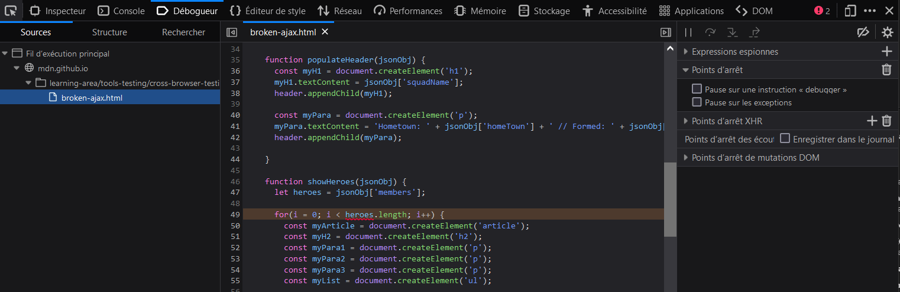
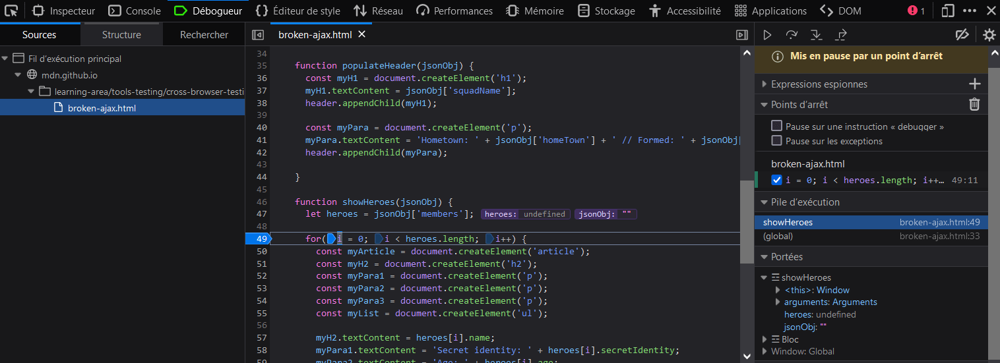

Nous allons maintenant aborder les problèmes Javascript en navigateur croisé et comment les résoudre. Cela comprend des informations sur l'utilisation des outils de dev des navigateurs pour localiser et fixer les problèmes, l'utilisation des Polyfills et de librairies pour contourner les problèmes, utiliser les fonctionnalités modernes de Javascript sur des vieux navigateurs, et plus encore.
| Prérequis : |
Connaissances de la base des langages HTML, CSS et JavaScript ; une idée du haut niveau des principes du test en navigateur croisé. |
|---|---|
| Objectif : |
Être capable de diagnostiquer les problèmes courant de Javascript en navigateur croisé, et l'utilisation des outils et techniques appropriés pour les fixer. |
Historiquement, Javascript présentaient des problèmes de compatibilité entre navigateurs — retour aux années 1990, les navigateurs majeurs jusqu'alors (Internet Explorer et Netscape) implémentaient des scripts dans différents langages (Netscape avait JavaScript, IE avait JScript et proposait aussi VBScript comme une option), et bien que JavaScript et JScript étaient compatibles dans une certaine mesure (les deux sont basés sur la spécification {{glossary("ECMAScript")}} ), les éléments étaient souvent implémentés avec des conflits, des incompatibilités, ce qui causait bien des cauchemards aux développeurs.
De tels problèmes d'incompabilités ont persistés jusqu'au début des années 2000, étant donné que les vieux navigateurs étaient encore utilisés et devaient donc encore être supportés par les site web. C'est une des raisons principale pour laquelle les librairies comme JQuery ont vu le jour — pour faire abstraction des différences entre les implémentations des navigateur (par ex. voir le bout de code dans Lancement d'une requête HTTP) comme ça la développeurs n'ont qu'à écrire un simple morceau de code (voir jQuery.ajax()). JQuery (ou qu'importe la librarie que vous utilisez) procédera ensuite au traitement en arrière-plan, donc vous n'aurez pas à le faire.
Les choses se sont bien améliorées depuis ; les navigateurs modernes font un bon travail en supportant "les fonctionnalités classiques de JavaScript", et les conditions pour utiliser ce genre de code ont diminué comme les prérequis pour supporter les plus vieux navigateurs ont diminué (gardez toutefois à l'esprit qu'elles n'ont pas tout entièrement disparues).
De nos jours, la plupart des problèmes de JavaScript en navigateur croisé sont :
Nous aborderons tout ces problèmes et d'autres encore plus bas.
Comme nous le disions dans l'article précédent sur le HTML/CSS, vous devriez vous assurer que votre code fonctionne en général, avant de vous concentrer sur les problèmes en navigateur-croisé. Si vous n'êtes pas encore trop familier avec les bases de La résolution JavaScript, vous devriez étudier cet article avant de continuer. Il y a plusieurs problèmes courants en JavaScript avec lesquelles vous devez être attentif, comme :
this dans une variable séparée, puis utilise cette variable dans une fonction imbriquée pour que vous soyez sûr que vous appliquez la fonction au bon périmètre de this.i au moment où il était créé), cependant chacun d'entre eux retourne i comme 11, parce que les boucle for font toutes leurs itérations avant que les fonctions imbriquées ne soit appelées. Si vous voulez que ça marche correctement, vous devez définir une fonction pour ajouter le gestionnaire séparément, l'appellant à chaque itération et lui passer la valeur courante de para et i à chaque fois (ou quelque chose de similaire). Voir good-for-loop.html (voir également le code source) pour une version qui fonctionne.Note : Buggy JavaScript Code: The 10 Most Common Mistakes JavaScript Developers Make a des discussions intéressantes à propos de ces erreurs courantes et plus encore.
Comme avec le HTML et le CSS, vous pouvez garantir une meilleure qualité, vous êtes moins susceptible de faire des erreurs en utilisant un linter, qui vous signale les erreurs et met en évidence les avertissement concernant les mauvaises pratiques, etc., et peut être configuré pour être plus stricte ou plus coulant dans leurs rapport d'erreur/avertissement. Les linters JavaScript/ECMAScript que nous vous recommandons sont JSHint et ESLint ; ils peuvent être utilisés de différentes façons, nous détaillerons certaines d'entre elles plus bas.
La page d'accueil de JSHint fournit un linter en ligne, qui vous permet d'entrer votre code JavaScript sur la gauche et vous fournit un résultat sur la droite, incluant des indicateurs, des avertissements, et des erreurs.
Ce n'est pas très pratique de devoir copier et coller votre code sur une page web pour vérifier sa validité à plusieur reprises. Ce dont vous avez vraiment besoin c'est un linter qui va s'adapter à votre espace de travail standard avec le minimum de prise de tête. Beaucoup d'éditeurs de code ont leur plugins linter, par exemple l'éditeur de code Atom de Github a un plugin JSHint disponible :
Pour l'installer :
 D'autres éditeurs répandus ont des packages similaires de linting disponibles. Par exemple, voir la section "Plugins for text editors and IDEs" de la page d'installation de JSHint.
D'autres éditeurs répandus ont des packages similaires de linting disponibles. Par exemple, voir la section "Plugins for text editors and IDEs" de la page d'installation de JSHint.
Il y a d'autres façons d'utiliser de tels linter ; vous pouvez vous renseignez à ce propos sur les pages d'installation de JSHint et ESLint.
Il convient de mentionner l'utilisation de ligne de commande — vous pouvez installer ces outils avec les utilitaires de ligne de commande (disponible via ILC — interface de ligne de commande) en utilisant npm (Node Package Manager — vous devrez installer NodeJS en premier). Par exemple, la ligne de commande suivante installe JSHint :
npm install -g jshint
Vous pouvez ensuite indiquer à ces outils les fichiers JavaScript que vous voulez lint, par exemple : Vous pouvez également utiliser ces outils avec un exécuteur de tâche/outil de build comme Gulp ou Webpack pour linter automatiquement votre JavaScript pendant le développement. (voir Using a task runner to automate testing tools dans un article ultérieur). Voir ESLint integrations pour les options de ESLint ; JSHint est supporté nativement par Grunt, et a également d'autre intégrations possibles, par ex. JSHint loader for Webpack.
Vous pouvez également utiliser ces outils avec un exécuteur de tâche/outil de build comme Gulp ou Webpack pour linter automatiquement votre JavaScript pendant le développement. (voir Using a task runner to automate testing tools dans un article ultérieur). Voir ESLint integrations pour les options de ESLint ; JSHint est supporté nativement par Grunt, et a également d'autre intégrations possibles, par ex. JSHint loader for Webpack.
Note : ESLint prend un peu plus de temps à l'installation et à la configuration que JSHint, mais il est également plus puissant.
Les outils de développement des navigateurs ont beaucoup de fonctionnalités utiles pour aider à déboguer JavaScript. Pour commencer, la console JavaScript reportera les erreurs dans votre code.
Faîtes une copie locale de notre exemple broken-ajax.html (voir aussi le code source). Si vous regardez dans la console, vous verrez le résultat suivant :

Le message d'erreur affiche "TypeError: jsonObj is null", et le numéro de ligne signifiée et le 37. Si nous regardons le code source, la section de code concernée est celle-ci :
function populateHeader(jsonObj) {
var myH1 = document.createElement('h1');
myH1.textContent = jsonObj['squadName'];
header.appendChild(myH1);
...
Le code casse aussitôt qu'on essaye d'accèder à jsonObj (ce qui comme vous pouvez vous y attendre, est supposé être un objet JSON). C'est supposé aller le chercher dans un fichier externe .json en utilisant l'appel XMLHttpRequest suivant :
var requestURL = 'https://mdn.github.io/learning-area/javascript/oojs/json/superheroes.json';
var request = new XMLHttpRequest();
request.open('GET', requestURL);
request.send();
var superHeroes = request.response;
populateHeader(superHeroes);
showHeroes(superHeroes);
Mais cela échoue.
Vous savez peut-être déjà ce qui ne va pas avec ce code, mais analysons-le un peu plus pour vous montrer comment vous pouvez l'examiner. Premièrement, il y a une API Console qui permet au code JavaScript d'interragir avec la console JavaScript du navigateur. Il y a un nombre de fonctionnalités disponibles, mais la principale que vous utiliserez le plus souvent est console.log(), qui affiche un message d'erreur personnalisé dans la console.
Essayer d'insérer la ligne suivante juste avant la ligne 31 (en gras au-dessus) :
console.log('Response value: ' + superHeroes);
Rafraîchissez la page dans le navigateur, et vous obtiendrez un résultat dans la console comme celui-ci :

Le résultat de console.log() montre que l'objet superHeroes ne semble pas contenir quoi que ce soit, bien que vous remarquerez que l'erreur a maintenant changé en "TypeError: heroes is undefined". Cela montre que l'erreur est intermittente, mettant ainsi en évidence qu'il s'agit d'une erreur asynchrone. Corrigeons l'erreur actuelle et avançons — retirer la ligne console.log(), et mettez à jour ce bloc de code :
var superHeroes = request.response; populateHeader(superHeroes); showHeroes(superHeroes);
par le suivant :
request.onload = function() {
var superHeroes = request.response;
populateHeader(superHeroes);
showHeroes(superHeroes);
}
Cela résout le problème asynchrone, en garantissant que les fonctions ne sont pas exécutées et passent l'objet superHeroes jusqu'à ce que la réponse ait fini de charger et soit disponible.
En résumé, à chaque fois que quelque chose ne marche pas et qu'une valeur ne paraît pas être ce qu'elle est censée être à un moment dans votre code, vous pouvez utiliser console.log() pour l'afficher et voir ce qu'il se passe.
Nous avons résolu un problème, mais nous sommes toujours coincés avec le message d'erreur "TypeError: heroes is undefined", reporté à la ligne 51. Examinons-la maintenant, en utilisant une fonctionnalité plus sophistiquée des outils de développement web : le débogueur JavaScript comme il est appellé dans Firefox.
Note : Des outils similaires sont disponibles dans d'autres navigateurs ; le Sources tab dans Chrome, le Débogueur dans Safari (voir Safari Web Development Tools), etc.
Dans Firefox, le Débogueur se présente comme suit :

La fonction principale de ces outils est la possibilité d'ajouter des points d'arrêt au code — ceux sont des points où l'exécution du code s'arrête, et à ce moment vous pouvez examiner l'environnement dans son état courant et voir ce qu'il se passe.
Mettons-nous au travail. Pour commencer, nous savons que l'erreur est renvoyée à la ligne 51. Cliquez sur la ligne numéro 51 dans le panneau central pour y ajouter un point d'arrêt (vous verrez une flèche bleue apparaître au-dessus de celle-ci). Maintenant rafraichissez la page (Cmd/Ctrl + R) — la navigateur arrêtera l'exécution du code à la ligne 51. A ce moment, le panneau de droite va se mettre à jour pour montrer des informations très utiles.

showHeroes() la fonction dans laquelle nous sommes actuellement, et en-dessous nous avons request.onload, qui stocke la fonction de gestion d'évènement contenant l'appel à showHeroes().showHeroes, et Window (la portée globale). Chaque portée peut être déployée pour montrer les valeurs des variables à l'intérieur de la portée au moment où l'exécution du code était arrêtée.Ici, nous pouvons obtenir des informations très utiles.
showHeroes — vous pouvez voir depuis celle-ci que la variable heroes n'est pas définie, indiquant qu'accèder à la propriété members de jsonObj (première ligne de la fonction) ne marche pas.jsonObj stock une chaîne de caractères, pas un objet JSON.request.onload dans la section Pile d'exécution. La vue va se mettre à jour pour afficher la fonction request.onload dans le panneau central, et sa portée dans la section Portées.request.onload, vous verrez que la variable superHeroes est également une chaîne de caractères, pas un objet. C'est la solution — notre appel XMLHttpRequest retourne le JSON comme du texte, pas comme du JSON.Note : Nous aimerions que vous essayez de résoudre ce problème par vous-même. Pour vous donner un indice, vous avez le choix entre tell the XMLHttpRequest object explicitly to return JSON format, ou conversion entre objet et texte après l'arrivée de la réponse. Si vous restez bloqué, consultez notre exemple fixed-ajax.html.
Note : L'onglet débogueur a tant d'autres fonctionnalités utiles que nous n'aborderons pas ici, par exemple les points d'arrêt conditionnels et les expressions espionnes. Pour bien plus d'informations, voyez la page du Débogueur.
Dès que vos applis vont devenir plus complexes vous allez commencer à utiliser plus de JavaScript, vous pouvez commencer à rencontrer des problèmes de performances, particulièrement lorsque vous visionnez vos applis sur des appareils plus lents. La performance est un gros sujet, et nous n'avons pas le temps de le couvrir en détail ici. Voici quelques conseils rapides :
Note : Le Writing Fast, Memory-Efficient JavaScript de Addy Osmani contient beaucoup de détails et de astuces impeccables pour améliorer les performances en JavaScript.
Dans cette section, nous regarderons certains des problèmes JavaScript les plus courants en navigateur croisé. Nous la décomposerons en :
Dans l'article précédent nous décrivions quelques façons dont les erreurs HTML et CSS et les fonctionnalités non reconnues peuvent être gérées grâce à la nature du langage. JavaScript n'est toutefois pas autant permissif que le HTML et le CSS — si le moteur de JavaScript rencontre une faute ou une syntaxe inconnue, le plus souvent il renverra des erreurs.
Il y a plusieurs fonctionnalités modernes du langage JavaScript décrites dans les versions récentes des spécifications (ECMAScript 6 / ECMAScript Next) qui ne marchent tout simplement pas sur les plus vieux navigateurs. Certaines d'entre elles sont des améliorations syntaxiques (essentiellement une façon plus simple, adéquate d'écrire ce que vous pouvez déjà écrire en utilisant des fonctionnalités existantes), et certaines offrent de nouvelles possibilités intéressantes.
Par exemple :
Il y a également beaucoup de nouvelles APIs qui apparaissent dans les navigateurs récents, qui ne fonctionnent pas sur les plus vieux navigateurs, par exemple :
Il y a plusieurs stratégies pour gérer les incompatibilités entre navigateurs concernant le support de fonctionnalité ; explorons les plus courantes.
Note : Ces stratégies n'existent pas dans des endroits distincts — bien sûr, vous pouvez les combiner autant que nécessaire. Par exemple, vous pourriez utiliser une fonction de détection pour déterminer si une fonctionnalité est supportée ; si elle ne l'est pas, vous pouvez ensuite exécuter le code pour charger un polyfill ou une libraire pour gérer le manque de support.
L'idée derrière une fonctionnalité de détection est que vous pouvez exécuter un test pour déterminer si une fonctionnalité est supportée dans le navigateur courant, et ensuite exécuter conditionnellement un code pour fournir une expérience acceptable sur chaque navigateur qui supporte et ne supporte pas la fonctionnalité. A titre d'exemple rapide, l'API Geolocalisation (qui présente des données de localisation pour l'appareil sur lequel le navigateur est en train d'être exécuté) a un point d'entrée principal pour son utilisation — une propriété geolocation disponible dans l'objet global Navigator. Par conséquent, vous pouvez détecter si le navigateur supporte la géolocalisation ou non en utilisant quelque chose comme suit :
if("geolocation" in navigator) {
navigator.geolocation.getCurrentPosition(function(position) {
// show the location on a map, perhaps using the Google Maps API
});
} else {
// Give the user a choice of static maps instead perhaps
}
Vous pouvez également écrire un test de ce type pour une fonctionnalité CSS, par exemple en testant l'existence de element.style.property (par ex. paragraph.style.transform !== undefined). Mais autant pour CSS que JavaScript, il est probablement préférable d'utiliser une librairie de fonction de détection établie plutôt que d'écrire la votre tout le temps. Modernizr est la norme standard pour les tests de fonction de détection.
Enfin, ne confondez pas fonction de détection avec le détecteur navigateur (qui détecte quel navigateur en particulier accède au site) — c'est une terrible pratique qui devrait être découragée à tout prix. Voir {{anch("Using bad browser sniffing code")}}, plus tard, pour plus de détails.
Note : Certaines fonctionnalités sont connues pour être indétectables — voir la liste des Undetectables de Modernizr.
Note : La fonction de détection sera couverte avec beaucoup plus de détails dans son propre article dédié, plus tard dans le module.
Les librairies JavaScript sont essentiellement une partie externe d'unités de code que vous pouvez attacher à vos pages, afin de vous procurer une quantité de fonctionnalités toutes prêtes qui peuvent être utilisées immédiatement, constituant un gain de temps dans le processus. Beaucoup de librairies ont sûrement été créées parce que leurs développeurs écrivaient une liste de fonctions utiles courantes pour leur faire gagner du temps dans leur futurs projets, et ils décidèrent de les lâcher dans la nature parce que d'autres personnes pourraient aussi les trouver utiles.
Les librairies Javascript ont tendance à se réunir en quelques types principaux (certaines librairies serviront plus d'un de ces types) :
Lorsque vous choissisez une librairie pour l'utiliser, assurez-vous qu'elle fonctionne sur l'ensemble des navigateurs que vous voulez supporter, et tester vos implémentations minutieusement. Assurez-vous également que la librairie est répandue et bien supportée, et qu'elle ne va pas devenir obsolète la semaine prochaine. Parler à d'autres développeurs pour savoir ce qu'ils peuvent vous recommander, regarder l'activité et combien de contributeurs la librairie a sur Github (ou qu'importe où elle est stockée), etc.
Note : JavaScripting.com vous donne une idée d'à peu près combien de librairies JavaScript sont disponibles, et peut être utile pour trouver une librairie dans un but précis.
L'utilisation de librairie à un niveau basique consiste à télécharger les fichiers de la librairie (JavaScript, peut-être un peu de CSS ou d'autres dépendances) et à les attacher à votre page (par ex. via un élément {{htmlelement("script")}}, bien qu'il y ait normalement plein d'autres options d'utilisation pour de telles librairies, comme les installer comme des composants Bower, ou les inclure comme des dépendances avec le module de paquets Webpack. Vous devrez lire les pages d'installation individuelles des librairies pour plus d'information.
Note : Vous allez aussi tomber sur des frameworks JavaScript pendant votre voyage dans le Web, comme Ember et Angular. Alors que les librairies sont souvent utilisées pour résoudre des problèmes individuels et ajoutées dans des sites existants, les frameworks ont tendances à être utilisés plus pour des solutions complètes pour développer des applications web complexes.
Les polyfills sont aussi des sortes de fichiers JavaScript externes que vous pouvez ajouter à votre projet, mais ils sont différents des librairies — là où les librairies améliorent les fonctionnalités existantes et rendent les choses plus simples, les polyfills apportent des fonctionnalités qui n'existent pas du tout. Les polyfills utilisent JavaScript ou d'autres technologies pour créer entièrement du support pour des fonctionnalités qu'un navigateur ne supporte pas nativement. Par exemple, vous pouvez utiliser un polyfill comme es6-promise pour faire fonctionner les promises sur des navigateurs où elles ne fonctionneraient pas nativement.
La liste des modernizr HTML5 Cross Browser Polyfills est utile pour trouver des polyfills pour différents objectifs. Une fois encore, renseignez-vous sur eux avant de les utiliser — assurez-vous qu'ils fonctionnent et qu'ils sont maintenus.
Observons cet exercice — dans cet exemple nous allons utiliser un polyfill Fetch pour fournir du support pour une API Fetch dans de vieux navigateurs ; nous avons toutefois également besoin d'utiliser le polyfill es6-promise, comme Fetch utilise largement les promises, et les navigateurs qui ne les supportent pas seront toujours bloqués.
<script src="es6-promise.js"></script> <script src="fetch.js"></script>
var myImage = document.querySelector('.my-image');
fetch('flowers.jpg').then(function(response) {
response.blob().then(function(myBlob) {
var objectURL = URL.createObjectURL(myBlob);
myImage.src = objectURL;
});
});

Note : Vous pouvez consulter notre version terminée sur fetch-polyfill-finished.html (voir aussi le code source).
Note : Une fois encore, il y a plusieurs manières différentes d'utiliser les différents polyfills que vous allez rencontrer — consulter chaque documentation individuelle d'un polyfill.
Une chose à laquelle vous devez penser est "pourquoi devrions-nous toujours charger le code polyfill, même si nous n'en avons pas besoin ?" C'est une bonne remarque — plus vos sites vont devenir complexes et plus vous aller commencer à utiliser de librairies, de polyfills, etc., vous pouvez commencer à charger beaucoup de code supplémentaire, qui peut commencer à affecter la performance, spécialement sur des appareils peu puissants. Il est donc normal de ne charger les fichiers que quand ils sont nécessaires.
Faire cela nécessite un peu de code supplémentaire dans votre JavaScript. Vous avez besoin d'un test de détection de caractéristiques qui détecte si le navigateur supporte la fonctionnalité que vous essayez d'utiliser :
if (browserSupportsAllFeatures()) {
main();
} else {
loadScript('polyfills.js', main);
}
function main(err) {
// actual app code goes in here
}
En premier temps on exécute une condition qui vérifie si la fonction browserSupportAllFeatures() retourne true. Si oui, on exécute la fonction main(), qui contiendra tout le code de notre app. browserSupportAllFeatures() ressemble à ça :
function browserSupportsAllFeatures() {
return window.Promise && window.fetch;
}
Ici on vérifie si l'objet Promise et la fonction fetch() existent dans le navigateur. Si les deux existent, la fonction retourne true. Si la fonction retourne false, alors on exécute le code à l'intérieur de la deuxième partie de la condition — elle exécute une fonction appelée loadScript(), qui charge les polyfills dans la page, puis exécute main() après que le chargement soit terminé. loadScript() ressemble à ça :
function loadScript(src, done) {
var js = document.createElement('script');
js.src = src;
js.onload = function() {
done();
};
js.onerror = function() {
done(new Error('Failed to load script ' + src));
};
document.head.appendChild(js);
}
Cette fonction créé un nouvel élément <script>, puis applique son attribut src au chemin que nous avons spécifié en premier argument ('polyfills.js' dont nous parlions dans le code au-dessus). Une fois qu'il est chargé, nous exécutons la fonction que nous avons spécifié en deuxième argument (main()). Si une erreur se produit pendant le chargement du script, on continue d'appeler la fonction, mais avec une erreur personnalisée que nous pouvons retrouver pour faciliter le débug d'un problème s'il arrive.
Notez que ce polyfills.js correspond aux deux polyfills que nous utilisons réunis dans un fichier. Nous l'avons fait manuellement, mais il y a des solutions intelligentes qui généreront automatiquement des paquets pour vous — voir Browserify (pour un tutoriel de départ voir Getting started with Browserify). C'est une bonne idée de paqueter les fichiers JS en un seul comme ça — cela réduit le nombre de requêtes HTTP ce qui améliore la performance de votre site.
Vous pouvez voir le code en direct sur fetch-polyfill-only-when-needed.html (voir aussi le code source). Nous aimerions être clairs sur le fait qu'on ne peut s'attribuer ce code — il a été écrit à la base par Philip Walton. Aller voir son article Loading Polyfills Only When Needed pour le code original, et beaucoup d'explications utiles autour de ce large sujet.
Note : Il y a certaines options externes à prendre en considération, par exemple Polyfill.io — c'est une librairie méta-polyfill qui va regarder toutes les capacités de chaque navigateur et appliquer les polyfills nécessaires, selon quelles APIs et fonctionnalités JS vous utilisez dans votre code.
Une autre option qui et devenue populaire pour les gens qui veulent utiliser des fonctionnalités Javascript modernes dès maintenant consiste à convertir le code qui utilise les fonctionnalités ECMAScript 6/ECMAScript 2015 en une version qui fonctionnera sur les vieux navigateurs.
Note : Cela s'appelle le "transpiling" — vous n'êtes pas en train de compiler du code à un niveau inférieur pour qu'il soit exécuté sur un ordinateur (comme vous l'auriez fait avec du code C) ; en fait, vous êtes en train de le transformer dans une syntaxe qui existe à un niveau similaire d'abstraction pour qu'il puisse être utilisé de la même manière, mais avec des conditions légèrement différentes (dans ce cas, transformer un type de JavaScript dans un autre).
Pour l'exemple, nous parlions des fonctions fléchées (voir arrow-function.html en direct, et voir le code source) plus tôt dans l'article, qui ne marchent que sur les tout nouveaux navigateurs :
() => { ... }
Nous pouvons le transpiler en une traditionnelle et démodée fonction anonyme, donc il fonctionnera aussi sur les vieux navigateurs :
function() { ... }
L'outil recommandé pour transpiler du JavaScript est généralement Babel. Il fournit la capacité de transpilation pour des fonctionnalités de langages qui sont appropriées à la transpilation. Pour les fonctionnalités qui peuvent juste être facilement transpilées en un équivalent plus ancien, Babel offre aussi des polyfills pour apporter du support.
La meilleure façon d'essayer Babel et d'utiliser la version en ligne, qui vous permet d'entrer votre code source sur la gauche, et une version transpilée sort sur la droite.
Note : Il y a plein de façon d'utiliser Babel (exécuteurs de tâche, outil d'automatisation, etc.), comme vous le verrez sur la page d'installation.
Tous les navigateurs ont un user-agent, qui identifie de quel navigateur il s'agit (version, nom, OS, etc.) Durant cette époque sombre où la plupart des gens utilisaient Netscape ou Internet Explorer, les développeurs avaient l'habitude d'utiliser les dénommés détecteur de code de navigateur pour détecter quel navigateur l'utilisateur utilisait et leur fournir le code approprié pour qu'il fonctionne sur ce navigateur.
Le code utilisé ressemble à quelque chose comme ça (bien que ça soit un exemple simplifié) :
var ua = navigator.userAgent;
if(ua.indexOf('Firefox') !== -1) {
// run Firefox-specific code
} else if(ua.indexOf('Chrome') !== -1) {
// run Chrome-specific code
}
L'idée était assez bonne — détecter quel navigateur affiche le site, et exécuter le code approprié pour s'assurer que le navigateur sera à même de bien utiliser votre site.
Note : Essayez maintenant d'ouvrir votre console JavaScript et d'exécuter navigator.userAgent pour voir ce qui est retourné.
Cependant, le temps passant, les développeurs ont commencé à voir des graves problèmes avec cette approche. Pour commencer, le code était source d'erreur. Et si une nouvelle fonctionnalité ne marche pas sur disons, Firefox 10 et inférieur, on implémente du code pour détecter cela, puis Firefox 11 arrive — est-ce qu'il supportera cette fonctionnalité ? Firefox 11 ne sera sûrement pas supporté parce qu'il n'est pas Firefox 10. Vous aurez à changer tout votre code de détection régulièrement.
Beaucoup de développeurs on implémenté de mauvais détecteur de code de navigateur et ne l'ont pas maintenu, et les navigateurs ont commencé à être bloqués en allant sur des sites web contenant des fonctionnalités qu'ils avaient déjà implémenté. C'est devenu une pratique commune que les navigateurs commencent à mentir à propos de quel navigateur ils étaient dans leur chaîne d'user-agent (ou déclarer qu'ils étaient tous les navigateurs), pour passer outre les détecteurs de code. Les navigateurs ont également implémenté des moyens pour permettre aux utilisateurs de changer quels chaîne d'user-agent le navigateur doit retourné lorsqu'il est interrogé par du JavaScript. Tout cela fait du détecteur de code bien plus qu'une source d'erreur, et d'inutilité.
Note : Vous devriez lire History of the browser user-agent string de Aaron Andersen pour une présentation utile et amusante de cette situation.
La leçon à retenir ici est — ne JAMAIS utiliser de détecteur de code. Le seul cas d'usage pour le détecteur de code de nos jours c'est si vous implémentez un fix pour un bug pour une version très particulière d'un navigateur en particulier. Même dans ce cas, la plupart des bugs sont fixés rapidement dans le cycle rapide des sorties des navigateurs. Cela n'arrive pas très souvent. {{anch("Feature detection")}} est presque toujours une meilleure option — si vous détectez si une fonctionnalité est supportée, vous n'aurez pas besoin de changer votre code quand de nouvelles versions de navigateur sortiront, et les tests sont bien plus fiables.
Si vous rejoignez un projet existant où il y a déjà de la détection de navigateur, regardez si elle peut être remplacée avec quelque chose de plus pratique. La détection de navigateur est à l'origine de toutes sortes de bugs curieux, comme {{bug(1308462)}}.
Dans l'article précédent, nous parlions quelque peu de la gestion des préfixes CSS. Alors, les nouvelles implémentations JavaScript utilisent parfois aussi des préfixes, bien que JavaScript utilise le camel case plutôt que l'hyphenation comme CSS. Par exemple, si un préfixe est utilisé sur un objet d'une toute belle API appelée Ojbect :
mozObjectwebkitObjectmsObjectVoici un exemple, issu de notre demo violent-theremin (voir le code source), qui utilise une combinaison de l'API Canvas et de l'API Web Audio pour créer un outil de dessin marrant (et bruyant) :
var AudioContext = window.AudioContext || window.webkitAudioContext; var audioCtx = new AudioContext();
Dans le cas de l'API Web Audio, les principaux points d'entrée pour utiliser l'API étaient supportés dans Chrome/Opera via les versions préfixées webkit (ils supportent dorénavant les versions non préfixées). Le moyen le plus simple de contourner cette situation est de créer une nouvelle version des objets qui sont préfixés dans certains navigateurs, et de la rendre égale à la version non préfixée, OU à la version préfixée (OU n'importe quelles versions préfixées qui méritent d'être éxaminées) — quelle que soit celle supportée par le navigateur affichant le site elle sera utilisée.
Ensuite utilisez cet objet pour manipuler l'API, plutôt que l'original. Dans ce cas nous créons un constructeur AudioContext modifié, puis nous créons une nouvelle instance de contexte audio à utiliser pour notre codage Web Audio.
Ce modèle peut être appliqué pour toutes les fonctionnalités JavaScript préfixées. Les librairies/polyfills JavaScript utilise également ce type de code, pour faire abstraction au maximum des différences entre navigateurs pour le développeur.
Une fois encore, les fonctions préfixées n'ont jamais été supposées être utilisées sur des sites web en production — elles sont sujettes au changement ou au retrait sans avertissement, et causent de problèmes en navigateur croisé. Si vous persistez à utiliser des fonctions préfixées, assurez-vous d'utiliser les bonnes. Vous pouvez voir quels navigateurs nécessitent des préfixes pour les différents fonctionnalités JavaScript/API sur les pages de références MDN, et des site comme caniuse.com. Si vous n'êtes pas sûr, vous pouvez aussi vérifier en faisant quelques test directement dans des navigateurs.
Par exemple, essayez d'aller dans la console de développeur de votre navigateur et commencez à taper
window.AudioContext
Si cette fonctionnalité est supportée par votre navigateur, elle s'autocomplètera.
Il y'a bien d'autres problèmes que vous allez rencontrer avec le JavaScript ; la chose la plus importante à vraiment savoir est comment trouver des réponses en ligne. Consultez la section Trouver de l'aide de l'article sur le HTML et CSS pour nos meilleurs conseils.
Voilà c'est le JavaScript. Facile hein ? Peut-être pas aussi facile, mais cet article devrait au moins vous donner un départ, et quelques idées sur comment attaquer les problèmes liés au JavaScript que vous allez rencontrer.
{{PreviousMenuNext("Learn/Tools_and_testing/Cross_browser_testing/HTML_and_CSS","Learn/Tools_and_testing/Cross_browser_testing/Accessibility", "Learn/Tools_and_testing/Cross_browser_testing")}}
{kind=link}